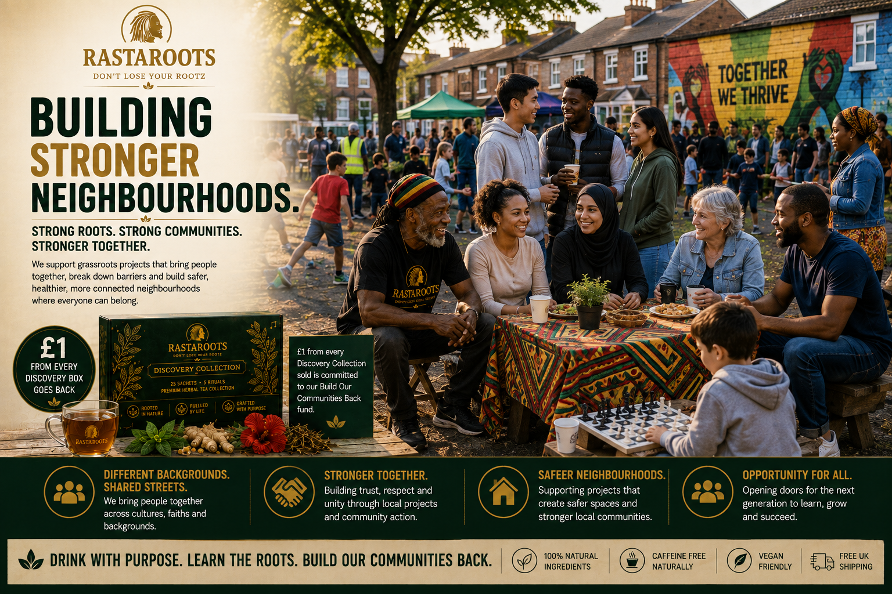
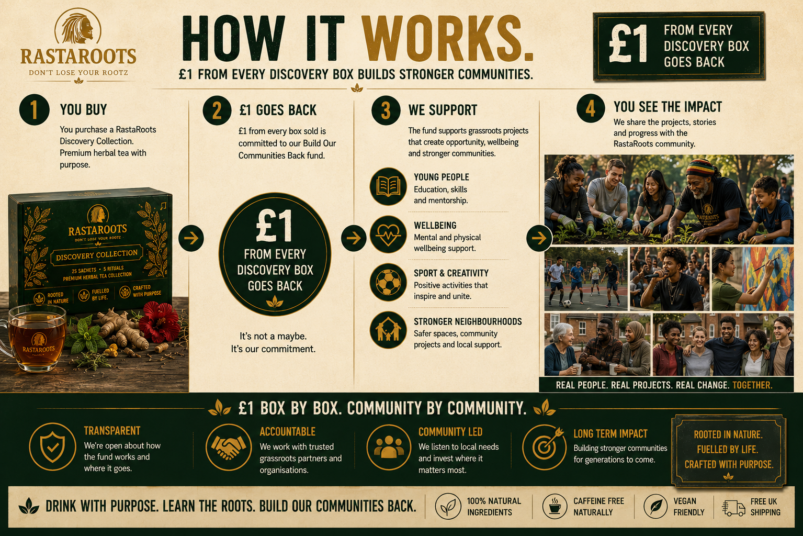
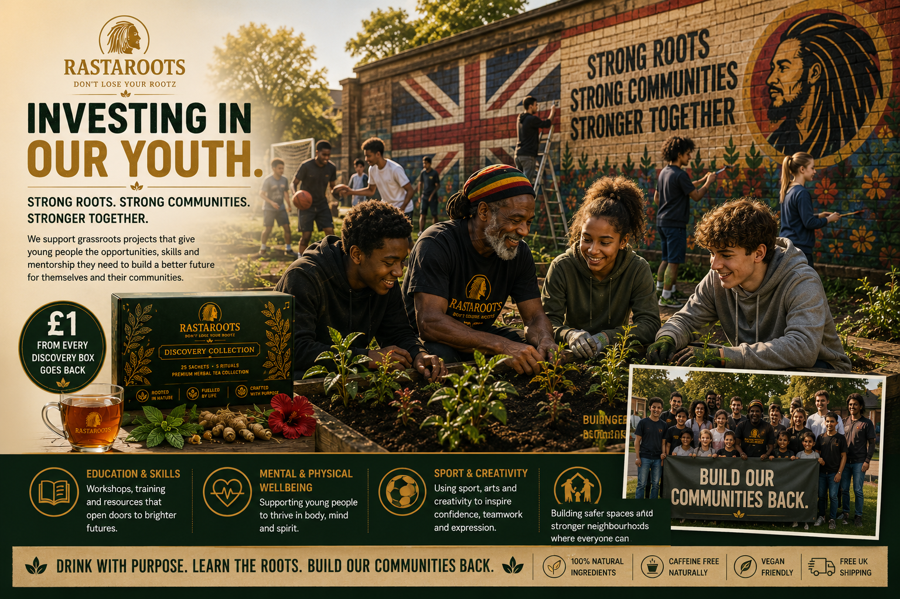
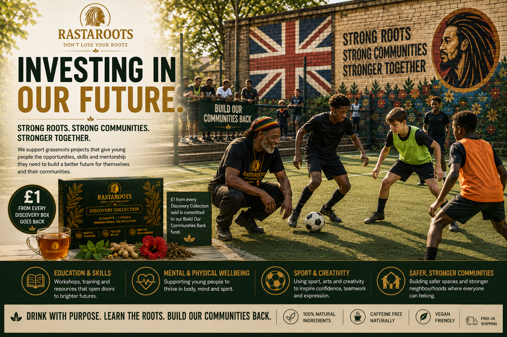
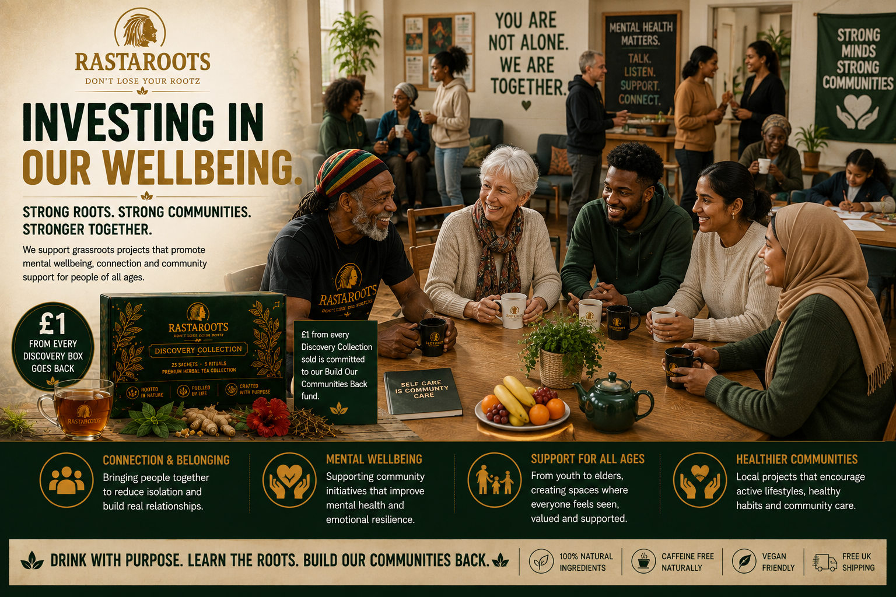
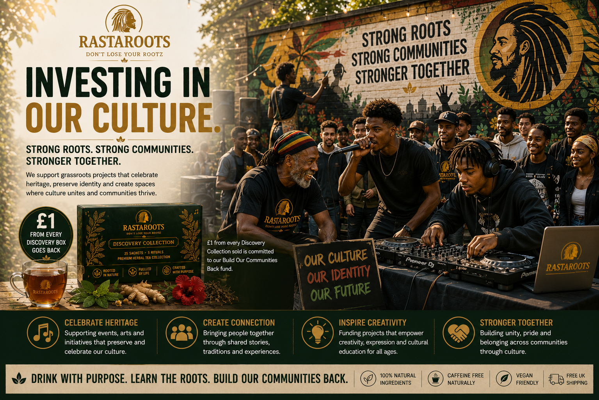

1
You buy a Discovery Collection.
Choose the RastaRoots Discovery Collection and experience five herbal tea rituals created for different moments of your day.
RastaRoots Community • Britain
RastaRoots was built to do more than sell herbal tea. We want every stage of our growth to help create stronger roots, stronger opportunities and stronger communities.

Creating opportunity.
Supporting stronger lives.
Building confidence and identity.
Strengthening local communities.
More Than Tea
We believe a business rooted in community should grow with its community — not simply sell to it.
That is why RastaRoots is committing £1 from every Discovery Collection sold to our Build Our Communities Back fund.
The aim is simple: as RastaRoots grows, create a growing source of support for grassroots community projects connected to young people, education, skills, mental and physical wellbeing, sport, creativity, culture and stronger neighbourhoods across Britain.
We are at the beginning of that journey. We will not pretend impact has happened before it has. As projects are selected and supported, we want this page to become a transparent record of what customers helped make possible.
The Community Commitment
A simple commitment designed to become more powerful as the RastaRoots community grows.

Choose the RastaRoots Discovery Collection and experience five herbal tea rituals created for different moments of your day.
For every Discovery Collection sold, £1 is committed to RastaRoots' Build Our Communities Back community fund.
Our focus is practical local work around opportunity, wellbeing, youth, sport, creativity, culture and community connection.
As projects begin, we intend to share the organisations, stories, contributions and outcomes so the community can see what its support helped build.
Where We Want To Make A Difference
Our community work is being built around areas where practical grassroots support can help people connect, grow and create opportunity.

Supporting grassroots projects that can give young people access to skills, education, mentoring, positive experiences and stronger pathways into their future.

Sport and creative activity can build confidence, teamwork, discipline, friendships and belonging. We want to help grassroots organisations create more of those opportunities.

Supporting community initiatives that reduce isolation, encourage connection and create welcoming spaces where people of different generations can feel seen, valued and supported.

Helping create spaces where music, stories, heritage, creativity and intergenerational knowledge can be celebrated, shared and passed forward.
Stronger Together
RastaRoots carries Caribbean roots proudly. They are part of our story, our visual language and the knowledge that helped inspire the brand.
But building communities back means bringing people together. Black. White. Asian. Caribbean. Mixed heritage. Young and old. Families who have lived in a neighbourhood for generations and people building a new life there today.
Working-class communities across Britain share many of the same challenges: disappearing spaces, fewer opportunities for young people, isolation, pressure on families and a loss of the places where people once naturally connected.
Our roots give us an identity. Our shared future gives us a reason to work together.
Our Community Principles
Community impact should be practical, respectful and accountable — not a marketing slogan.
Local people and grassroots organisations understand their communities better than a brand looking in from the outside.
We want resources to reach credible grassroots work where relatively small amounts of support can make a meaningful difference.
People should never become marketing props. Community stories should be shared with respect for the people behind them.
If we say money went back into communities, customers should be able to see where it went and what it helped make possible.
Transparency From The Beginning
RastaRoots is still an early-stage business. The £1 commitment starts with the Discovery Collection, while the wider impact programme will develop as sales, partnerships and resources grow.
£1 from every RastaRoots Discovery Collection sold is committed to the Build Our Communities Back fund.
We intend to focus on grassroots projects aligned with youth, wellbeing, sport, creativity, culture, skills and stronger neighbourhoods.
As funding is deployed, our aim is to publish the projects supported, the contributions made and the stories behind the impact.
Drink With Purpose
The RastaRoots Discovery Collection brings together five herbal tea rituals in one 25-sachet collection — created to help you explore different herbs, flavours and moments throughout your day.
25 herbal tea sachets • 5 rituals • 30 days Herbal Library access • 15% off RastaRoots Coffee • £1 committed to Build Our Communities Back.

Founder Vision
RastaRoots began with herbal tea, heritage and a belief that modern life has disconnected too many of us from simple rituals, natural ingredients and each other.
Building the business creates an opportunity to do something practical with that belief.
Build Our Communities Back is designed to grow alongside RastaRoots — starting with a clear £1 commitment and developing into visible grassroots impact as the brand grows.
Read The RastaRoots Founder Story →Community Fund FAQ
Clear answers about the RastaRoots community commitment and how we intend to develop it.
Build Our Communities Back is the RastaRoots community commitment. £1 from every Discovery Collection sold is committed to a fund intended to support grassroots community projects around youth opportunity, wellbeing, sport, creativity, culture and stronger neighbourhoods.
RastaRoots commits £1 from every Discovery Collection sold to the Build Our Communities Back community fund.
The initial focus is grassroots work connected to youth opportunity, education and skills, mental and physical wellbeing, sport and creativity, culture and heritage, community connection and stronger neighbourhoods.
The initial vision is focused on grassroots and working-class communities across Britain. RastaRoots is proudly influenced by Caribbean heritage, while Build Our Communities Back is intended to be multicultural and inclusive.
RastaRoots is at the beginning of the programme. The £1 commitment applies to Discovery Collection sales, while the selection and reporting of supported grassroots projects will develop as the programme grows. We will not claim community impact before that impact has taken place.
Our intention is to use this community page to publish future project updates, contributions and impact stories so customers can see how the Build Our Communities Back commitment is being put into practice.
Yes. £1 from every RastaRoots Discovery Collection sold is committed to the Build Our Communities Back fund.
Strong Roots • Strong Communities • Stronger Together
Discover five herbal tea rituals, learn the roots behind the herbs and help us build a business that puts something back into the communities around it.